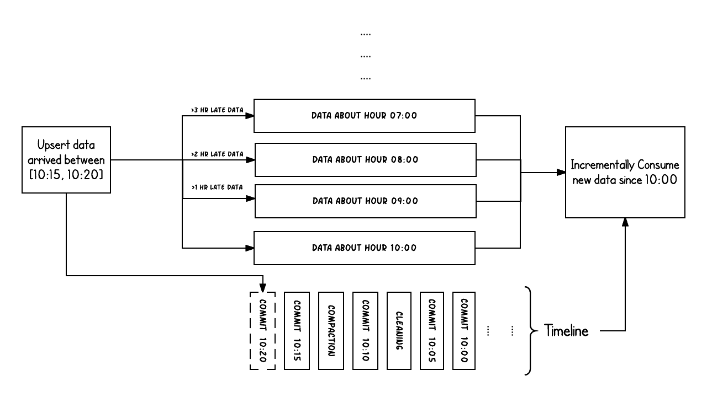
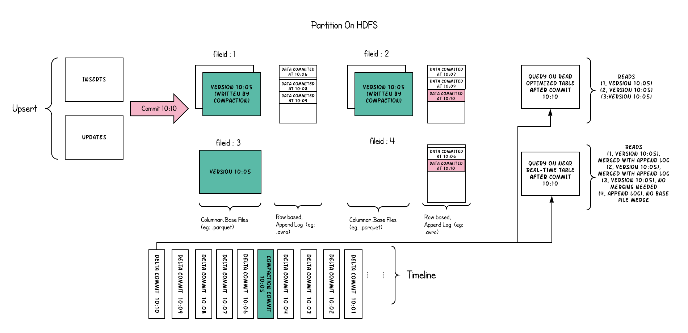

原文连接:https://www.cnblogs.com/apachehudi/p/12014919.html
Apache Hudi(发音为“Hoodie”)在DFS的数据集上提供以下流原语
- 插入更新 (如何改变数据集?)
- 增量拉取 (如何获取变更的数据?)
在本节中，我们将讨论重要的概念和术语，这些概念和术语有助于理解并有效使用这些原语。
时间轴
在它的核心，Hudi维护一条包含在不同的即时时间所有对数据集操作的时间轴，从而提供，从不同时间点出发得到不同的视图下的数据集。Hudi即时包含以下组件
操作类型: 对数据集执行的操作类型即时时间: 即时时间通常是一个时间戳(例如：20190117010349)，该时间戳按操作开始时间的顺序单调增加。状态: 即时的状态
Hudi保证在时间轴上执行的操作的原子性和基于即时时间的时间轴一致性。
执行的关键操作包括
COMMITS- 一次提交表示将一组记录原子写入到数据集中。CLEANS- 删除数据集中不再需要的旧文件版本的后台活动。DELTA_COMMIT- 增量提交是指将一批记录原子写入到MergeOnRead存储类型的数据集中，其中一些/所有数据都可以只写到增量日志中。COMPACTION- 协调Hudi中差异数据结构的后台活动，例如：将更新从基于行的日志文件变成列格式。在内部，压缩表现为时间轴上的特殊提交。ROLLBACK- 表示提交/增量提交不成功且已回滚，删除在写入过程中产生的所有部分文件。SAVEPOINT- 将某些文件组标记为"已保存"，以便清理程序不会将其删除。在发生灾难/数据恢复的情况下，它有助于将数据集还原到时间轴上的某个点。
任何给定的即时都可以处于以下状态之一
REQUESTED- 表示已调度但尚未启动的操作。INFLIGHT- 表示当前正在执行该操作。COMPLETED- 表示在时间轴上完成了该操作。

上面的示例显示了在Hudi数据集上大约10:00到10:20之间发生的更新事件，大约每5分钟一次，将提交元数据以及其他后台清理/压缩保留在Hudi时间轴上。
观察的关键点是：提交时间指示数据的到达时间（上午10:20），而实际数据组织则反映了实际时间或事件时间，即数据所反映的（从07:00开始的每小时时段）。在权衡数据延迟和完整性时，这是两个关键概念。
如果有延迟到达的数据（事件时间为9:00的数据在10:20达到，延迟 >1 小时），我们可以看到upsert将新数据生成到更旧的时间段/文件夹中。
在时间轴的帮助下，增量查询可以只提取10:00以后成功提交的新数据，并非常高效地只消费更改过的文件，且无需扫描更大的文件范围，例如07:00后的所有时间段。
文件组织
Hudi将DFS上的数据集组织到基本路径下的目录结构中。数据集分为多个分区，这些分区是包含该分区的数据文件的文件夹，这与Hive表非常相似。
每个分区被相对于基本路径的特定分区路径区分开来。
在每个分区内，文件被组织为文件组，由文件id唯一标识。
每个文件组包含多个文件切片，其中每个切片包含在某个提交/压缩即时时间生成的基本列文件（*.parquet）以及一组日志文件（*.log*），该文件包含自生成基本文件以来对基本文件的插入/更新。
Hudi采用MVCC设计，其中压缩操作将日志和基本文件合并以产生新的文件片，而清理操作则将未使用的/较旧的文件片删除以回收DFS上的空间。
Hudi通过索引机制将给定的hoodie键（记录键+分区路径）映射到文件组，从而提供了高效的Upsert。
一旦将记录的第一个版本写入文件，记录键和文件组/文件id之间的映射就永远不会改变。 简而言之，映射的文件组包含一组记录的所有版本。
存储类型和视图
Hudi存储类型定义了如何在DFS上对数据进行索引和布局以及如何在这种组织之上实现上述原语和时间轴活动（即如何写入数据）。
反过来，视图定义了基础数据如何暴露给查询（即如何读取数据）。
| 存储类型 | 支持的视图 |
|---|---|
| 写时复制 | 读优化 + 增量 |
| 读时合并 | 读优化 + 增量 + 近实时 |
存储类型
Hudi支持以下存储类型。
写时复制 : 仅使用列文件格式（例如parquet）存储数据。通过在写入过程中执行同步合并以更新版本并重写文件。
读时合并 : 使用列式（例如parquet）+ 基于行（例如avro）的文件格式组合来存储数据。 更新记录到增量文件中，然后进行同步或异步压缩以生成列文件的新版本。
下表总结了这两种存储类型之间的权衡
| 权衡 | 写时复制 | 读时合并 |
|---|---|---|
| 数据延迟 | 更高 | 更低 |
| 更新代价(I/O) | 更高（重写整个parquet文件） | 更低（追加到增量日志） |
| Parquet文件大小 | 更小（高更新代价（I/o）） | 更大（低更新代价） |
| 写放大 | 更高 | 更低（取决于压缩策略） |
视图
Hudi支持以下存储数据的视图
- 读优化视图 : 在此视图上的查询将查看给定提交或压缩操作中数据集的最新快照。
该视图仅将最新文件切片中的基本/列文件暴露给查询，并保证与非Hudi列式数据集相比，具有相同的列式查询性能。 - 增量视图 : 对该视图的查询只能看到从某个提交/压缩后写入数据集的新数据。该视图有效地提供了更改流，来支持增量数据管道。
- 实时视图 : 在此视图上的查询将查看某个增量提交操作中数据集的最新快照。该视图通过动态合并最新的基本文件(例如parquet)和增量文件(例如avro)来提供近实时数据集（几分钟的延迟）。
下表总结了不同视图之间的权衡。
| 权衡 | 读优化 | 实时 |
|---|---|---|
| 数据延迟 | 更高 | 更低 |
| 查询延迟 | 更低（原始列式性能） | 更高（合并列式 + 基于行的增量） |
写时复制存储
写时复制存储中的文件片仅包含基本/列文件，并且每次提交都会生成新版本的基本文件。
换句话说，我们压缩每个提交，从而所有的数据都是以列数据的形式储存。在这种情况下，写入数据非常昂贵（我们需要重写整个列数据文件，即使只有一个字节的新数据被提交），而读取数据的成本则没有增加。
这种视图有利于读取繁重的分析工作。
以下内容说明了将数据写入写时复制存储并在其上运行两个查询时，它是如何工作的。

随着数据的写入，对现有文件组的更新将为该文件组生成一个带有提交即时时间标记的新切片，而插入分配一个新文件组并写入该文件组的第一个切片。
这些文件切片及其提交即时时间在上面用颜色编码。
针对这样的数据集运行SQL查询（例如：select count(*)统计该分区中的记录数目），首先检查时间轴上的最新提交并过滤每个文件组中除最新文件片以外的所有文件片。
如您所见，旧查询不会看到以粉红色标记的当前进行中的提交的文件，但是在该提交后的新查询会获取新数据。因此，查询不受任何写入失败/部分写入的影响，仅运行在已提交数据上。
写时复制存储的目的是从根本上改善当前管理数据集的方式，通过以下方法来实现
- 优先支持在文件级原子更新数据，而无需重写整个表/分区
- 能够只读取更新的部分，而不是进行低效的扫描或搜索
- 严格控制文件大小来保持出色的查询性能（小的文件会严重损害查询性能）。
读时合并存储
读时合并存储是写时复制的升级版，从某种意义上说，它仍然可以通过读优化表提供数据集的读取优化视图（写时复制的功能）。
此外，它将每个文件组的更新插入存储到基于行的增量日志中，通过文件id，将增量日志和最新版本的基本文件进行合并，从而提供近实时的数据查询。因此，此存储类型智能地平衡了读和写的成本，以提供近乎实时的查询。
这里最重要的一点是压缩器，它现在可以仔细挑选需要压缩到其列式基础文件中的增量日志（根据增量日志的文件大小），以保持查询性能（较大的增量日志将会提升近实时的查询时间，并同时需要更长的合并时间）。
以下内容说明了存储的工作方式，并显示了对近实时表和读优化表的查询。

此示例中发生了很多有趣的事情，这些带出了该方法的微妙之处。
- 现在，我们每1分钟左右就有一次提交，这是其他存储类型无法做到的。
- 现在，在每个文件id组中，都有一个增量日志，其中包含对基础列文件中记录的更新。
在示例中，增量日志包含10:05至10:10的所有数据。与以前一样，基本列式文件仍使用提交进行版本控制。
因此，如果只看一眼基本文件，那么存储布局看起来就像是写时复制表的副本。 - 定期压缩过程会从增量日志中合并这些更改，并生成基础文件的新版本，就像示例中10:05发生的情况一样。
- 有两种查询同一存储的方式：读优化（RO）表和近实时（RT）表，具体取决于我们选择查询性能还是数据新鲜度。
- 对于RO表来说，提交数据在何时可用于查询将有些许不同。 请注意，以10:10运行的（在RO表上的）此类查询将不会看到10:05之后的数据，而在RT表上的查询总会看到最新的数据。
- 何时触发压缩以及压缩什么是解决这些难题的关键。
通过实施压缩策略，在该策略中，与较旧的分区相比，我们会积极地压缩最新的分区，从而确保RO表能够以一致的方式看到几分钟内发布的数据。
读时合并存储上的目的是直接在DFS上启用近实时处理，而不是将数据复制到专用系统，后者可能无法处理大数据量。
该存储还有一些其他方面的好处，例如通过避免数据的同步合并来减少写放大，即批量数据中每1字节数据需要的写入数据量。